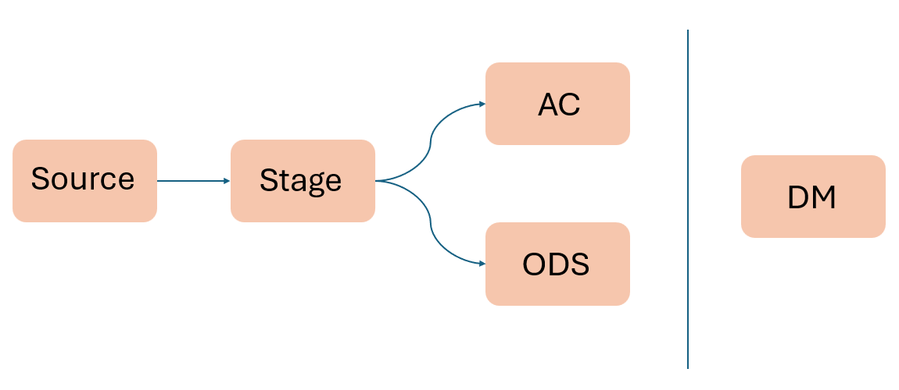

在Data Migration中，會有一套處理資料的流程，以下為常用流程:
各節點介紹:
Source:
為資料源，由於資料源可能為一個或多個，所以在這個階段是先蒐集資料再給下個stage進行整理
Stage(STG):
可以定義其他名字，如:DF(Data file)，在這個階段中會先定義欄位型態、名稱、size...etc，統一格式再進行轉移
ODS:
在資料倉儲與資料遷移（Data Migration）的架構中，ODS（Operational Data Store） 是一個臨時性或中繼性的資料層，用來整合、清理來源系統的營運資料。
AC:
可以定義其他名字，命名通常以客戶為主，主要是放資料源的raw data(一般會在這裡append資料)
DM:
Data Mart，在stage層整理過後產出的tables
Note: 一般在STG及AC的資料存活時間較短(1天)；在ODS的資料存活時間較長(1個月)
先在各種不同的AP中蒐集Data source，再經過ETL(Extract、Transform、Load)處理到Data Warehouse，分析客戶的商業邏輯轉成各個不同的DM，最後再產成報表。
point: Transform => Glue data
AP:
為Application / 應用系統，代表這些是資料來源系統，包括:交易系統、人力資源系統、超市系統…等 OLTP 系統（線上交易處理系統）
Data Warehouse:
是一種用於整合、儲存和分析來自多個來源的大量資料的系統，也可以把Data Warehouse視為一個超大型DB。
OLTP:
Online Transaction Processing，處理大量日常交易與業務操作，注重即時性與資料一致性。OLTP 系統像是：「處理前台買賣」
在提取資料時需要快速且有條理，所以會有正規化的處理
💡關鍵詞：交易為主、更新快、資料庫正規化、效能佳、即時
| 項目 | 說明 |
|---|---|
| 操作類型 | 查詢（SELECT），尤其是聚合（SUM, AVG, COUNT） |
| 資料量 | 巨量歷史資料（TB 級甚至更多） |
| 效能要求 | 複雜查詢與多維分析需優化，但非即時性 |
| 資料庫設計 | 維度建模（Star Schema、Snowflake），常做反正規化 |
| 使用者類型 | 分析師、管理層、BI 報表使用者 |
| 例子 | 月營收報表、年度趨勢分析、行銷洞察 |
OLAP:
Online Analytical Processing，進行歷史資料的分析與查詢，支援決策分析。OLAP 系統像是：「分析後台營收趨勢」
由於分析上要切換各個不同的報表程序會過於繁瑣，所以有時會有反正規化的處理
💡關鍵詞：分析為主、查詢多、歷史資料、反正規化、多維分析（Cube）
| 項目 | 說明 |
|---|---|
| 操作類型 | 查詢（SELECT），尤其是聚合（SUM, AVG, COUNT） |
| 資料量 | 巨量歷史資料（TB 級甚至更多） |
| 效能要求 | 複雜查詢與多維分析需優化，但非即時性 |
| 資料庫設計 | 維度建模（Star Schema、Snowflake），常做反正規化 |
| 使用者類型 | 分析師、管理層、BI 報表使用者 |
| 例子 | 月營收報表、年度趨勢分析、行銷洞察 |
🔄 比較表：
| 分類 | OLTP | OLAP |
|---|---|---|
| 主要用途 | 線上交易處理 | 決策支援與資料分析 |
| 操作 | CRUD 操作（新增、刪除、修改） | 複雜查詢（聚合、切片、轉置） |
| 資料庫設計 | 正規化（避免重複） | 反正規化（查詢快） |
| 使用者 | 一般使用者、業務系統 | 分析師、管理決策者 |
| 資料量 | 單筆交易、大量紀錄 | 歷史資料、彙總資料 |
| 查詢時間 | 極短（毫秒級） | 較長（秒～分鐘） |